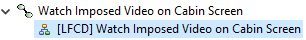
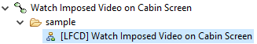
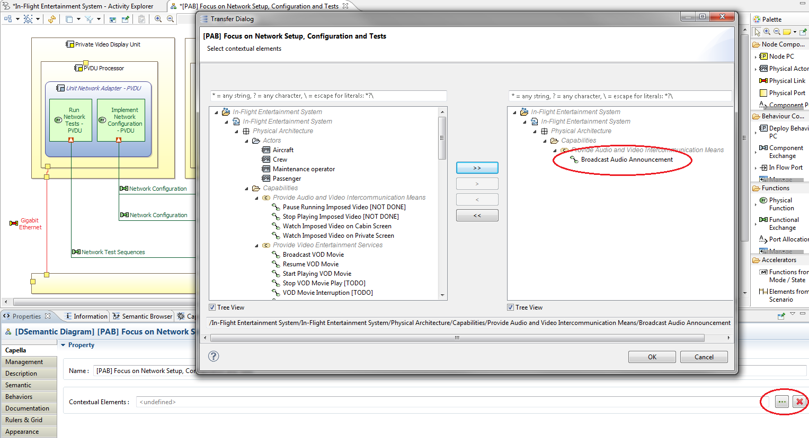
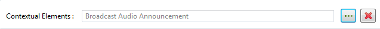
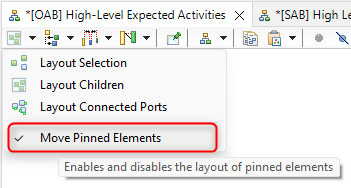
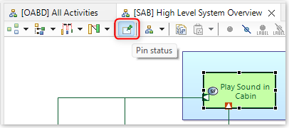
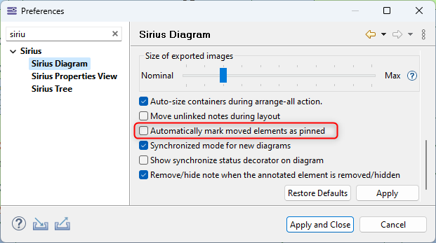
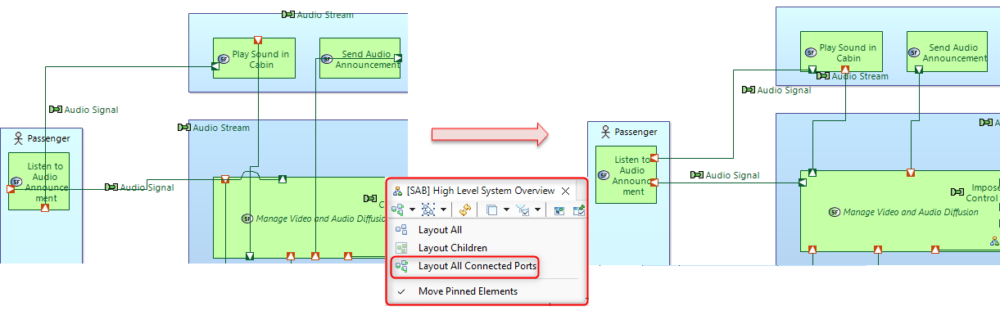

A diagram is a partial (exhaustive in some cases) view of the model content with a graphical representation of nodes and links.
The following properties are common to all diagrams. They can be edited in the Properties View by selecting the diagram in the project explorer. The Properties View can be opened by selecting Window->Show View->Properties from the menu bar.
Name
The Name property allows to change the name of the diagram.
Package
The Package property allows to show the diagram in a subfolder under the diagram's semantic element in the capella project explorer. By default, the is property is empty, and the capella project explorer shows the diagram as a direct child of the model element targeted by the diagram:

Setting the package property to 'sample', will show the Diagram in a folder with that label under the target element:

Note that there is only one level of depth for diagram packages, and a Diagram can belong to only one package.
Elements of Interest
The Elements of Interest property allows to associate a Diagram with an arbitrary list of model elements that are of special interest to the diagram. The Semantic Browser view displays the relation between a Diagram and its Elements of Interest.
Diagrams may no represent the latest state the model they represent. For instance, if the model is modified directly in the Project Explorer, the related diagrams may not represent the model anymore (because of addition, deletion, renaming, …).
There are several refresh strategies:
To manually refresh diagrams, two methods are available:

To change the refreshing strategy, see the diagram-related Preferences.
|
|
The strategy in Capella is slowly moving from having a clear distinction between blank and contextual diagrams towards having only blank diagrams with selected contextual elements. This trend starts with version 2.2.0 in the end of 2011 and will continue in the first semester of 2012. |
Blank diagrams are the most common diagrams in Capella. Blank means the user decides which elements should appear on the diagram. This allows him to build focused diagrams, with specific purposes.
Contextual diagram are focused on one specific element. These diagrams have specific refresh rues. Examples:
The idea of diagrams with contextual elements is to unify Blank and Contextual diagrams. All diagrams are blank, but the user can decide that a given diagram is going to be contextual to a selected subset of elements.
Example of elements in Physical Architecture: A Functional Chain goes through three sets of Functions / Behaviour Components / Nodes.

Using the Properties View of the diagram, the Functional Chain FC1 is set as a contextual element for the current diagram (several elements could be set as contextual). At this stage, the new diagram only contains two pieces of the Functional Chain and does not even display the Functional Chain.

The result is seen in the Properties View.

The next refresh
 on the diagram automatically creates the missing pieces of the Functional Chain. Any semantic change of the Functional Chain (addition of steps, etc.) will automatically be taken into account in this diagram.
on the diagram automatically creates the missing pieces of the Functional Chain. Any semantic change of the Functional Chain (addition of steps, etc.) will automatically be taken into account in this diagram.

Below is another example. The Behaviour Component BC2 is set as contextual: the other Components it is communicating with are automatically displayed.

There are 2 layout action families:
The result of all these actions will depend on the Pin Status of the nodes. If "Move Pinned Elements" is checked then the Pin status is ignored in layout actions. Otherwise the Pinned elements are let unmoved during layout actions.
You can change this value directly from the drop down menu.

Diagram element pinning allows marking specific elements in a diagram as having a fixed location so that they are not moved by the Layout actions. Once the end user has performed a first layout effort, the Layout actions can still be called for new elements without risking harming the positioning of existing elements.

It is possible to configure preferences to set the node as "Pinned" as soon as it is moved by the user. By default, this preference is set as disabled.

When no diagram element is selected, the diagram toolbar contains a button for displaying a dialog showing the pin / unpin status of all elements.

For a diagram selection:
"Layout All" action layouts all diagram elements. Recommended only the first time the diagram is created because it will have large impacts in the whole diagram.For a selection of nodes
"Layout Selection" action layouts selected elements. This action move the selected elements itselves in their parent and layout all contained children in the selection."Layout Children" action layouts the direct children of the diagram.
"Layout Children" action layouts the direct children elements of the selection.
The selection may be a diagram or a node container.
|
|
Note that if the selected container has been previously manually resized, its size is kept after the layout. It is usefull if you want to keep the global diagram layout coherent. You may use Auto Size action to adapt the container size to its content. |
This action will layout the ports, linked to another port with an edge so that the port is displayed on the proper side of the diagram node. It is useful when the position of the nodes and containers has already been defined and edges still need a better layout.
If a diagram is selected, "Layout All Connected ports" action layouts all the ports in the whole diagram. If a diagram node element is selected, "Layout Connected ports" action layouts only the direct ports of the selection (not recursive).

{kind=link}
{kind=link}
{kind=link}